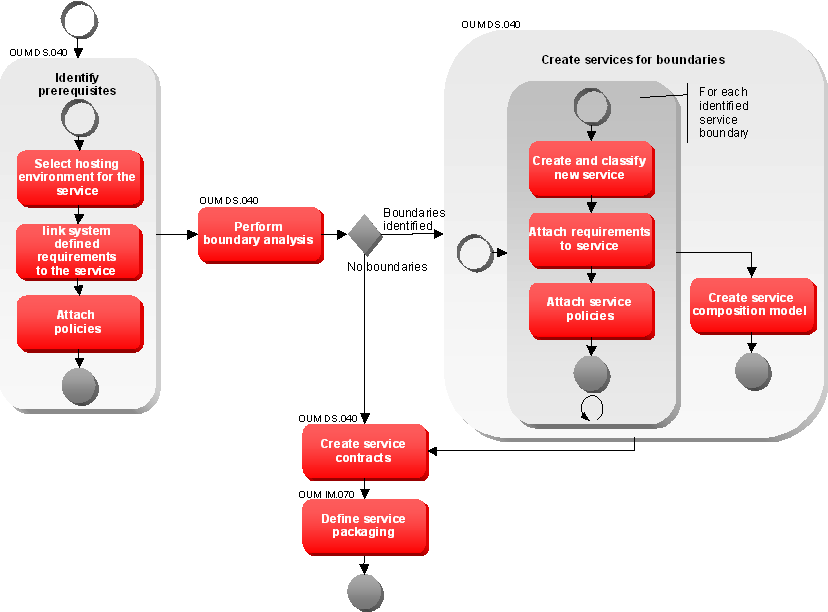

OUM |
Technique Overview |
||
Method Navigation |
Current Page Navigation |
||
|
|
||||||||
The purpose of this technique is to provide guidance about how to define services to the right level of granularity using service definition.
Service Definition covers the set of activities required to identify the right level of granularity and to effectively define service contracts from a service candidate. The service contract for a service provides the detailed description of both functional and non-functional characteristics that must be fulfilled by the interface and the implementation in order for a service to be realized.
The Service candidates that were justified for realization are further analyzed to define the set of services to be created to realize the identified candidate. One service candidate can therefore result in several services being created. For each service a contract is created from the separated requirements. The outcome of service definition is one or more service contracts each leading into the implementation of a separate service. The contracts feed into the service design procedures, but also enable service testing to begin the preparation necessary to later test the completed service. Once the service contract has been defined, the test criteria for the service can be created by analyzing the service contract.
Service Contract - This technique is used to take the service candidates through a process to determine the services needed to deliver the service candidate. From there, one or more service contracts are defined where each will lead to the implementation of a separate service. The service contract for a service provides the detailed description of both functional and non-functional characteristics that must be fulfilled by the interface and the implementation in order for a service to be realized.
The results feed into the Service Design and the Service Testing techniques.
No. |
Step | Component | Component Description |
|---|---|---|---|
1 |
Identify prerequisites. | Requirements, Policies | Prerequisites required are the hosting environment for the services to be produced, requirements (functional and supplemental), and polices. |
2 |
Perform boundary analysis. | Boundary Analysis | The Boundary Analysis component contains the detailed service boundaries as a result of analyzing various influencing conditions against the service candidate. |
3 |
Create services for boundaries. | Service Definition | |
4 |
Create service contracts. | Contract Definitions | The Contract Definitions component contains all the contract definitions that are made. One definition is produced for each identified service boundary and the composition service. |
5 |
Define service packaging. | Software Package | The Software Package can package one or several services together to build on deployment unit. |
The service definition starts top down by analyzing the requirements of the service candidate and commences bottom up checking technology driven boundaries to identify the right level of granularity of the services. As a result one or more services will be defined. For each identified service boundary, a separate service contract will be defined. The four steps listed in the steps table above can be detailed as follows:

First, a number of prerequisites are identified. This is done in the sub-steps below. It is assumed that an enterprise repository is used during these steps providing access to the assets.
Select a hosting environment on which the service should get deployed. Check the reference architecture for any shared service platforms applicable for the service. Check the hosting environment is able to deliver against the non-functional requirements of the service candidate.
Identify all requirements linked to the system that represents the selected hosting environment from the enterprise repository. Requirements added may predefine technology to be used, for example for logging. Create the relationship to the candidate service in the enterprise repository.
Depending on the tool used to implement the enterprise repository this step may be automated.
Identify all policies registered in the enterprise repository that are applicable to the service. Specifically architectural policies may predefine many capabilities of the service to standardize definition, design and implementation. Link all policies identified to the candidate service in the enterprise repository.
Depending on the tool used to implement the enterprise repository, this step may be automated.
Service Boundary Analysis should ensure the service candidate is implemented by a service with the right level of granularity. It helps to align the boundary of the candidate with the service portfolio of the enterprise and the technical considerations from the services infrastructure.
The boundary analysis should be split into two. First, the boundary analysis follows a top-down approach to define the functional scope to be delivered by services. This should have been done already during SOA Service Identification and Discovery. Therefore, at this point the candidate is only reviewed. Secondly, the boundary analysis follows the bottom-up approach to define technical boundaries that will enforce splitting the candidate into several services to be delivered. If adjustments are needed, consider whether a new iteration of service justification (described in the SOA Service Identification and Discovery technique) is required.
Please refer to the SOA Service Boundary Analysis technique to understand how to identify service boundaries. You may find that other influencing factors might be appropriate in your enterprise or project in addition to the ones described in the SOA Service Boundary Analysis technique. The challenge for the architect is to find the right balance between too coarse grain and too fine-grained services. A very coarse grain service will require more efforts to generalize for reusability, whereas if services are too fine grained they will be too specific and not reused.
After having identified the boundaries of the candidate, the resulting services are created to deliver the former candidate.
Each boundary condition will result in the definition of an additional service. (Note: Think of a service boundary as a metaphorical fence running through requirements.) Create the new service in the enterprise repository.
The first step is to give the service a name, and classify the service on business category, architectural layer and scope.
One of the key elements of a service contract is the service name. Defining an appropriate and consistent service naming strategy is a key activity. Without a consistent approach, enterprises will encounter challenges around service definition and service discovery, which leads to service duplication.
Much has been written about an appropriate approach to naming a service candidate. One area of contention tends to focus around whether a service name should be based around a noun or a verb. One reason for such debate can be highlighted by investigating a practitioner's background. People with a database or object-oriented design background tend to use noun whereas people with a process or procedural design background tend to use verbs.
The flowing table highlights some of the pros and cons with respect to the noun vs. verb debate when focusing on Business Activity Services.
| Pros or Cons | Nouns | Verbs |
|---|---|---|
| Pros |
|
|
| Cons |
|
|
In reality, both noun and verb approaches are required, as service naming guidelines should cover all types of services and not just business activity services. Each service type has specific guidelines. See the following table for some example guidelines.
| Service Type | Guideline | Description | Example |
|---|---|---|---|
| Presentation |
Verb+Noun | Use the purpose of the portlet and the information/business entity being displayed | LookupCustomer |
Business Process |
Verb+Noun | Use the business function model to dictate the name of a business process service. | ManageCustomerSale |
Business Activity |
Verb+Noun | Use the business function model to dictate the name of a business activity service. | InvoiceCustomer |
Data |
Noun | Represents a business entity and should be predetermined by the name that the business would understand. Noun based preferable but when necessary can be prefixed with a verb or adjective but only if it makes sense to the business. | (Authorized)Customer |
Connectivity |
(Verb)+Noun | Use the name of the foreign source that the business entity represents. | Finance |
Utility |
Verb+(Noun) | Verb based, but in the event that clarification or differentiation is needed between two or more utility services that perform the same type of action, and therefore need to use the same verb name, adding a noun to the front of the verb can be used. | Notify |
While it is important to define guidelines around service naming, it is also important that an enterprise enforces a consistent approach by establishing SOA governance policies to enforce the agreed upon standards. Some example guidelines around service naming conventions are:
As well as having guidelines for naming services, it is important to include guidelines around naming service operations:
The requirements for the new service should then be attached to the service as this represents the scope of the service.
Finally, identify all policies applicable for the new service and link them in the enterprise repository.
If a service candidate is split into several services, the requirements of the original service must still be fulfilled by the combination of the services created. This may result in the need for a composite service representing the original candidate. In some cases the original service candidate may become a business process orchestrating the services split by the boundaries. If no explicit composite service is needed, for instance because the new service are called by different consumers, you may need to validate the decision with the authority who has initially justified the service candidate, through a new iteration of service justification (part of the service identification and discovery). If it is agreed to remove the original service candidate, the candidate should be marked as “declined” in the repository and a comment should be included which describes how the service is now implemented with more fine grained services.
Update the models to reflect the new service decomposition appropriately. In addition create usage agreements for all dependencies created between services calling each other.
Depending on the outcome of the boundary analysis one or more services may have been created in the Enterprise Repository to implement the initial service candidate. For each service created a service contract is required. Create the contract for the service in the Enterprise Repository. Use template contracts according to the classification of the service.
The service contract defines the service. It provides the concise definition of what function(s) the service performs, the operating constraints of the service (such as QoS requirements), security requirements, as well as any service enablement requirements such as SLA enforcement, exception handling, logging, etc. Once service definition completes, the resulting output is one or more services each documenting its own contract which have been defined along service boundaries specifying the contractual details for a service.
The purpose of the service contract is not to simply state the prescribed function and scope of the service, but also specify all characteristics that should be addressed when making the service available within a shared environment. The second side of the service contract consists of details around lifecycle management, expected consumer interaction, QOS expectations, as well as service enablement requirements.
Lifecycle management provides definitions on release frequency, versioning, deprecation, and funding. These characteristics are not necessarily important to the delivery of the service, but are important when considering maintenance and management of the service once in production.
The expected consumer interaction requirements include the definition of the intended usage of the service by its consumers. These requirements include the definition or description of the expected message exchange patterns, as well as the ability to support compensating transactions.
Quality of Service (QoS) expectations describe the various supplemental requirements that should be supported through the service’s implementation that may not be specifically accounted for through the connected requirements. QoS should be closely examined and defined for every service to ensure that it is designed, implemented and deployed appropriately. The omission of defining QoS requirements up front is a typical fault that quite often results in the failure of software projects.
Service enablement requirements include all relevant requirements regarding the enabling of the service within a shared environment. These policies define whether the service will have managed and monitored SLAs; how exception cases will be handled by the service infrastructure involved in enabling the service; how the service will be managed; what level of logging will be required by the service; etc.
The explicit definition of the second side of the service contract is an important enabler for service design (and implementation), as the service interface may be significantly impacted by the values provided in these areas from the service contract. These values also influence provisioning requirements and the deployment structure for the resulting service.
Service contract templates provide the capability of reusing predefined service contracts and provide not only a certain level of convenience, but more important consistency as well as the enforcement of appropriate standards across a variety of services of varying scopes and categories. This concept allows the enterprise to specify elements of a service contract that must be applied to some or all services that will be created as a part of the enterprise’s SOA.
A service contract template predefines special elements of the contract according to the architectural policies. Please review the Service Architecture technique for more information on architectural policies, and the analysis of influencing factors on contracts. Each set of policies identified for the combination of service layer and scope should be used to preconfigure service contracts.
The implementation of contract templates varies depending on the nature of the enterprise repository. If possible, use the classification assigned to the service to dynamically configure the properties of the contract. For some properties a predefined value may be applied that cannot be changed. Other properties may have a reduced set of options available to be selected. If dynamic contracts cannot be realized, you should consider creating different types of the contract asset to reflect the configuration.
Review the IT Asset Management technique for a list of recommended data elements that should be captured within a service contract. There is certainly room to customize these elements. Some other areas to consider for the service contract include: Information Model – description of data used by the services and the relevant semantic rules governing that data; Process Model – flow of events, rules, transaction boundaries within a process; Error Handling – types of exceptions thrown, messages and error codes returned.
Review the decision on the hosting system for each service created. If a service requires a different hosting environment, then start another iteration for the service definition for that service. When the target system is identified, analyze service-packaging options possible for that system, and select or create a software package for the service. Consider the best practices and guidelines as introduced in the Service Packaging and Deployment technique.
There are no templates available to assist with this technique.
This technique is recommended for use in the following OUM tasks:
| Task | Usage |
|---|---|
| Use this technique to understand how to create contracts for services. | |
| Use this technique to identify the software package to which the service should belong. |
This section is not yet available.

Copyright © 2006, 2016, Oracle and/or its affiliates. All rights reserved.